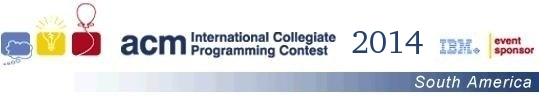
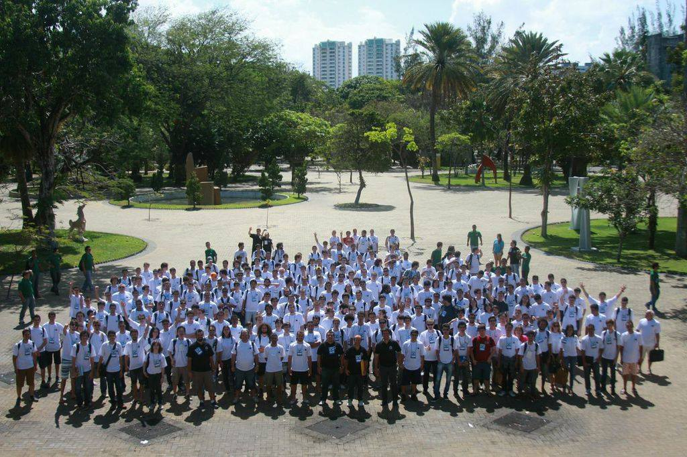

Primeira Fase: 13 de setembro de 2014
Final Brasileira: 7 e 8 de novembro de 2014
 Resultados Finais
Resultados Finais
A final brasileira de 2014 ocorreu em Fortaleza, Ceará, no belíssimo campus da
UNIFOR -- Universidade de Fortaleza. O diretor da final foi o Prof. Pedro
Porfirio Muniz Farias.

Os problemas do warmup. Entradas e saídas tiveram os seguintes autores:
- A - The fellowship of the ring - Pablo Ariel Heiber
- B - The two towers - Pablo Ariel Heiber
- C - The return of the King - Pablo Ariel Heiber
Os problemas da competição ( Entradas e saídas) tiveram os seguintes autores:
- A - Automated Checking Machine - Ricardo Anido
- B - Black and white stones - Fidel Schaposnik
- C - Counting substhreengs - Pablo Ariel Heiber
- D - Dividing the names - Leopoldo Taravilse
- E - Even distribution - Bruno Junqueira Adami
- F - Fence the vegetables - Pablo Ariel Heiber
- G - Galaxy collision - Guilherme Albuquerque Pinto
- H - Help cupid - Pablo Ariel Heiber
- I - Intrepid climber - Cristhian Bonilha
- J - Journey to the kingdom - Fidel Schaposnik
- K - Knights of the Round Table - Jorge Enrique Moreira Broche
O Comitê que desenvolveu os problemas foi formado por
Alejandro Strejilevich de Loma,
Bruno Junqueira Adami,
Christian Bonilha,
Fidel Schaposnik,
Guilherme Albuquerque Pinto,
Jorge Enrique Moreira Broche,
Pablo Ariel Heiber, e
Yonny Mondelo Hernandez.
O time campeão da Maratona de Programação 2014 foi o time
I am root da Universidade de São Paulo, formado
por e pelo coach Marcio Oshiro. É a segunda vez
que a USP-SP ganha a Maratona de Programação, e representará o Brasil em
uma final mundial pela décima primeira vez, nove anos consecutivos.
Os times que receberam medalhas foram:
- Medalha de ouro
- USP - I am root: Marcos Kawakami,
Stefano Tommasini, Antonio Roberto de Campos Junior, coach Marcio
Oshiro. Classificado para a Final Mundial
- UFCG - Manoel borboleta e miguxos:
Manoel Lucas Urbano de Barros Lins, Rafael Catalão Perrela, Lucas
Figueiredo,
coach Rohit Gheyi. Classificado para a Final Mundial
- UFRJ - Guns N' Codes:
Diego Ximenes Mendes, Rodrigo Zhou, Filipe Zhou, coach Marcia Rosana
Cerioli. Classificado para a Final Mundial
- Medalha de prata
- Unicamp - Rua do sabão:
Igor Wolff Resplande, Ruan Ramos Monteiro Silva, Patricia Hongo,
coach Lucas Tiago de Castro Jesus. Classificado para a Final Mundial
- UFMG - Literally Tourists :
Gabriel Poesia, Diogo Oliveira, Guilherme Gomes e coach Dilson
Guimarães. Classificado para a Final Mundial
- USP - Arquiduque Andorinha: Ramon
Silva de Lima, Marcelo Sales, André Amaral de Souza coach
Marcio Oshiro.
- Medalha de bronze
- UFU - Paitheus quer ir embora:
Matheus Scandiffio, Alvaro Bruno Silva Pereira, Caio Augusto Araujo
Oliveira e coach Luiz Cláudio Theodoro.
- ITA - CPF na nota? :
Caíque Lira, Luiz Ramos, Felipe Freitas e coach Armando Gouveia.
- UFPE - Code Fu Pandas:
Mario Henrique, Lucas Lima, Gustavo Stor, coach Davi Pinheiro.
- IME - zuera++ :Jonathan Carvalhosa,
Matheus Leal Assunção, Geraldo Avelino, coach
Claudia Justel.
O placar final da competição pode ser conferido
neste link.
Estatísticas.
Clarifications.
Runs.
Neste ano foram reconhecidos os campeões regionais:
Várias fotos e muito da festa estão disponíveis na página da Maratona no Facebook.
Os times classificados para a final mundial serão convidados a fazer o curso de treinamento que ocorrerá em
janeiro e fevereiro de 2015 na Unicamp, com patrocínio da Google.